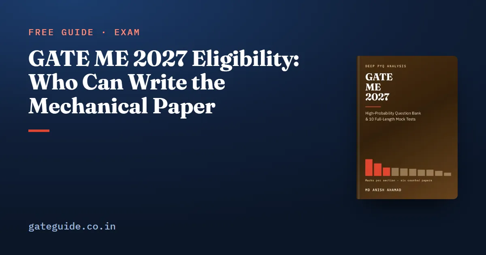

GATE ME 2027 Eligibility: Who Can Write the Mechanical Paper

You can write GATE ME 2027 if you are currently in the third or higher year of any undergraduate degree, or if you have completed a government-approved degree in engineering, technology, architecture, science, commerce, arts or humanities. No age limit is stated. This guide answers one question only, "can I apply?", and works through the common cases so you can check yours in a minute.
In this guide
Key takeaways
- Third-year, final-year and graduate students of any undergraduate degree are covered by the official rule.
- Completed government-approved degrees in engineering, technology, architecture, science, commerce, arts or humanities are covered.
- Students of master's programmes such as M.Sc., M.A. or MCA are eligible from the first year.
- No age limit is stated for GATE 2027.
- The rule is not tied to a branch; a non-mechanical student may choose the ME paper.
- Anything the official facts do not state must be checked in the current notification.
What "eligibility" covers, and what it does not
Eligibility here means one thing: whether GATE will accept your application to sit the paper. It does not decide whether an institute will admit you with your score, or whether an employer will consider it. Those are separate rules set by each institute or employer.
The official rule has three parts. Read each as a separate gate; you need to pass only one.
| Part of the rule | Who it covers |
|---|---|
| Currently in the third or higher year of any undergraduate degree | Third-year and final-year students |
| Completed any government-approved degree in Engineering, Technology, Architecture, Science, Commerce, Arts or Humanities | Graduates, with no age limit stated |
| In the first or higher year of a master's programme such as M.Sc., M.A. or MCA | Postgraduate students |
Remember: You need to satisfy only one row. A graduate does not also need to be a current student, and a third-year student does not need a degree in hand.
Working through the common cases
The quickest way to learn a rule is to test it on cases. Each case below names the row that decides it.
Case 1: a B.Tech mechanical student in third year
The first row covers students currently in the third or higher year of any undergraduate degree. This student is in the third year. Eligible.
Case 2: a B.Tech mechanical student in second year
The first row starts at the third year. No other row applies: the student has no completed degree and is not in a master's programme. Not eligible this year, under the rule as stated. They can apply next year.
Case 3: a graduate who finished B.E. Mechanical in 2015
The second row covers anyone who has completed a government-approved engineering degree. No age limit or year limit is stated. Eligible.
Case 4: a B.Sc. Physics graduate who wants to write ME
The second row covers completed government-approved science degrees. The rule does not tie the ME paper to a branch. Eligible to apply, though what the score can be used for depends on each institute.
Case 5: a final-year B.Tech electrical student
The first row covers any undergraduate degree, not only mechanical. Eligible to choose the ME paper.
Trap: Assuming the rule matches your branch to your paper. The official rule, as stated, does not. Check separately whether the admissions or jobs you want accept an ME score with your degree.
Cases the official facts do not settle
Some situations are not covered by the facts as checked in September 2026. For each, read the current notification on gate2027.iitm.ac.in rather than relying on a forum answer.
| Situation | What to do |
|---|---|
| Diploma holder in a lateral-entry B.Tech | Check which year of the degree you are counted in |
| A degree from outside India | Check the notification's rule for foreign degrees |
| Pending backlogs in the final year | Check the notification; the facts do not state a rule |
| Integrated or dual-degree programmes | Check how your year is counted |
| A degree in a field not listed | Check the notification's full list |
In one line: If your case is not in the three rows, the notification decides it, not a guess.
If you are eligible, what next
Registration runs on GOAPS. As checked in September 2026, the regular window closed on 27 September 2026 and the extended window with a late fee runs to 5 October 2026; the registration and fee guide has the details. The exam runs on 6-7, 13-14 and 20-21 February 2027, and the GATE 2027 dates page keeps the calendar. Before the day, read the admit card and exam day rules.
If you are not from a mechanical background, plan for the parts of the paper that do not depend on branch. General Aptitude carried exactly 15 marks in all six counted ME papers from 2022 to 2026, and Engineering Mathematics exactly 13. The General Aptitude guide covers the first. Together they are 28 marks of every paper.
A three-question check for your own case
Put your situation through these questions in order, and stop at the first yes:
- Am I currently in the third year or later of an undergraduate degree? If yes, the first row covers me.
- Have I completed a government-approved degree in engineering, technology, architecture, science, commerce, arts or humanities? If yes, the second row covers me.
- Am I in any year of a master's programme such as M.Sc., M.A. or MCA? If yes, the third row covers me.
If all three answers are no, the rule as stated does not cover you, and the notification is the only place to look for an exception.
Why third-year students should consider writing now
A third-year student who writes in February 2027 gets one real attempt before the final year. It shows the paper's pace and its question types: between 20 and 26 numerical-answer questions in every counted ME paper, with no options to lean on. A score from a practice attempt is not the goal; the experience of three hours under exam conditions is.
The book gives a staged plan for every length of preparation, built on the six counted papers, in the GATE ME 2027 book.
Quick revision
- Third or higher year of any undergraduate degree: eligible.
- Completed government-approved degree in the listed fields: eligible, with no age limit stated.
- Master's programmes such as M.Sc., M.A., MCA: eligible from the first year.
- Second-year undergraduates: not covered by the rule as stated.
- The rule is not tied to branch; admissions and jobs have their own criteria.
- Diplomas, foreign degrees, backlogs and integrated programmes: check the notification.
- General Aptitude and Engineering Mathematics were 28 fixed marks in every counted ME paper.
Frequently asked questions
Can a third-year B.Tech student write GATE ME 2027?
Yes. The official eligibility for GATE 2027 includes candidates currently in the third or higher year of any undergraduate degree. A third-year mechanical student can apply now and write the ME paper in February 2027. A second-year student cannot under that rule. Confirm the exact wording in the current notification before you apply.
Is there an age limit for GATE ME 2027?
No age limit is stated in the official eligibility for GATE 2027. A candidate who completed a government-approved degree in engineering, technology, architecture, science, commerce, arts or humanities years ago is eligible on the same terms as a recent graduate. Admission or recruitment that uses GATE scores may have its own rules.
Do I need a mechanical engineering degree to write GATE ME?
The official eligibility rule does not tie a paper to a branch. It covers candidates in the third or higher year of any undergraduate degree, or with a completed government-approved degree in the listed fields. What a GATE ME score can then be used for depends on each institute or employer, so read their criteria separately.
Can a final-year student apply for GATE ME 2027?
Yes. A final-year student is in the third or higher year of an undergraduate degree, which the official rule covers. You do not need to have your degree in hand when you register. Keep your college details ready for the form, and check the current notification for any document the organisers ask for.
Sources
Dates, fees and the syllabus are set by the GATE 2027 organising institute and can change. Always confirm at gate2027.iitm.ac.in.